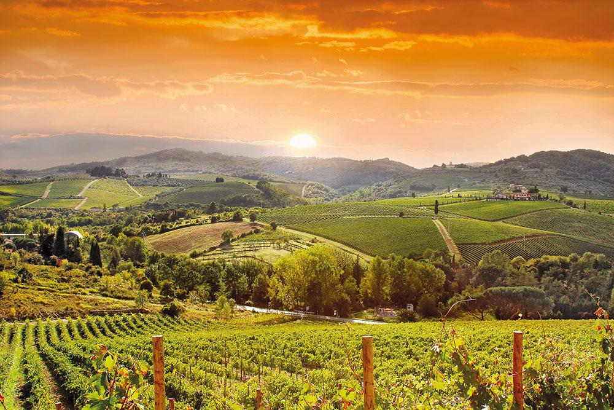
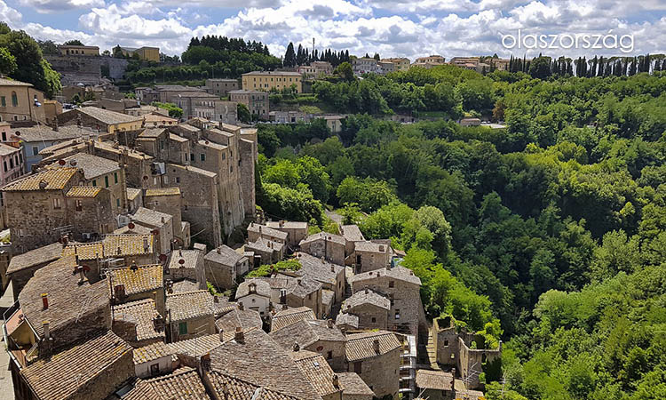

<!DOCTYPE html>
<html lang="hu">
    <head>
        <meta charset="UTF-8">
        <meta http-equiv="X-UA-Compatible" content="IE=edge">
        <meta name="viewport" content="width=device-width, initial-scale=1.0">
        <link rel="stylesheet" href="https://maxcdn.bootstrapcdn.com/bootstrap/3.4.1/css/bootstrap.min.css">
        <link rel="stylesheet" href="latnivalok.css">
        <script src="https://ajax.googleapis.com/ajax/libs/jquery/3.6.0/jquery.min.js"></script>
        <script src="https://maxcdn.bootstrapcdn.com/bootstrap/3.4.1/js/bootstrap.min.js"></script>
        <title>Toszkána Látványosságai</title>
    </head>
<body>
</body>
</html>
<html>

<head>
    <meta http-equiv="X-UA-Compatible" content="IE=edge">
    <meta name="viewport" content="width=device-width, initial-scale=1.0">
</head>

<body>
    <h1 class="my-4">Bevezető</h1>
    <div class="row">
        <div class="col-sm-6">

    

            </div>
            <div class="col-sm-6">
    
            </div>
</div>
<div class="row">
    <div class="col-sm-6">
        <p>A csodálatos vidék számtalan szebbnél szebb látnivalót rejt magában- bármennyi időt is töltünk itt, mindig úgy érezzük, hogy a felét sem láttuk a táj szépségeinek.</p>
        </div>
    <div class="col-sm-6">
        <p>Siena, Firenze vagy éppen Montepulciano kisvárosai, a La Crete vidék vagy Chianti lágy dombjai mind mind gyönyörű tájkép látványosságot, a kiváló éttermek és pincészetek pedig gasztronómiai élményeket nyújtanak. </p>
    </div>
</div>

  
  <h2 class="my-4">Toszkána Látványosságai</h2>
  <div class="row">
      <div class="col-md-6 col-xl-3">
          <h4>Firenze</h4>
          <p> A reneszánsz kultúra szülővárosa, híres történelmi tettek színhelye, nagy tudósok és művészek egykori otthona. Mára a világ egyik leglátogatottabb turisztikai látványossága, néha pont népszerűsége veszi el varázsát: az utcáin hömpölygő városnéző tömeg kicsit túlzás. De van egy nagyon jó módja, hogy megússzuk a tömeget: naplemente idején kapaszkodjunk fel a város egyik magasabb pontjára(a Piazzale Michelangelora vagy másszunk fel a Harangtoronyba) és élvezzük a toszkán dombok felett ...</p>
      </div>

      <div class="col-md-6 col-xl-3">
          <h4>Volterra</h4>
          <p>Gyönyörű, etruszk alapítású városka Toszkána tartomány egyik büszkesége. A középkorban is híres város, Volterra újkori népszerűségét egy tiniregénynek is köszönheti: itt játszódik az Alkonyat-saga Újhold részének kulcsjelenete. Aki nem ismeri a szenvedős-vámpíros bestseller szimbólumrendszerét csodálkozva fogja nézegetni a regénnyel és a filmmel kapcsolatos ajándéktárgyak és a sikongató amerikai tinilányok hatalmas tömegét. Ne</p>
      </div>

      <div class="col-md-6 col-xl-3">
          <h4>Pienza</h4>
          <p>Az egyik legszebb kisváros Montepulciano környékén, és nincs is messze a szállásunktól. Toszkán kerékpártúránkon nem busszal közelítettük meg ezt a csodás helyet, hanem végigtekerve a dombok és a szőlőültetvények között kerekeztünk be a városkapun. Mi nem jöttünk-mi megérkeztünk.</p>
      </div>

      <div class="col-md-6 col-xl-3">
          <h4>Arrezzo</h4>
          <p>Toszkána gyönyörű települései között Arezzo nem foglal el kiemelkedő helyet - a modern nagyvárosból épp csak a legrégebben épült városmag tartogat igazán régi épületeket. A középkori hangulatú főtéren az árkádok alól a város híres szülőttéről, a híres író, festő és építész Giorgo Vasari-ról elnevezett kávézóból szemlélhetjük az üdítően turista-mentes főteret. </p>
      </div>
  </div>


<h2 class="my-4">Eseleg elutazna?</h2>
<h4>Árainkból kiderül, mennyibe kerülne önnek ezek az utak.</h4>

<table class="table table-striped">
    <tr class="text-center">
        <td class="w-50 bg-dark text-white font-weight-bold"><b>Helyszín</b></td>
        <td class="w-25 bg-dark text-white font-weight-bold"><b>Ára</b></td>
    </tr>
    <tr>
        <td>Firenze</td>
        <td class="text-center">18 000 Ft-70 000Ft</td>
    </tr>
    <tr>
        <td>Volterra</td>
        <td class="text-center">96 735Ft-71 000Ft</td>
       
    </tr>
    <tr>
        <td>Pienza</td>
        <td class="text-center">30 000Ft-55 000Ft</td>
        
    </tr>
    <tr>
      <td>Arrezzo</td>
      <td class="text-center">22 500Ft-60 000Ft</td>
  </tr>
</table>


</body>